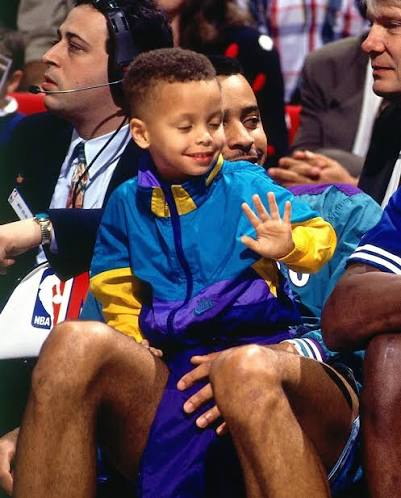
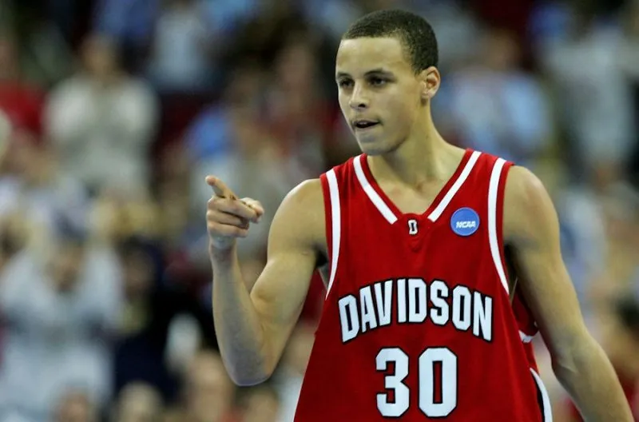
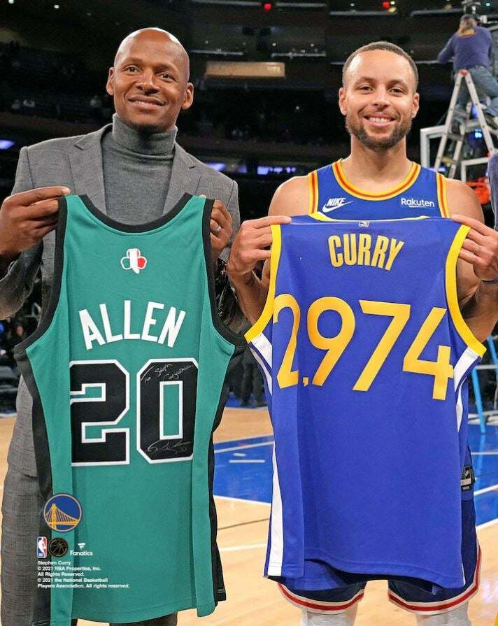
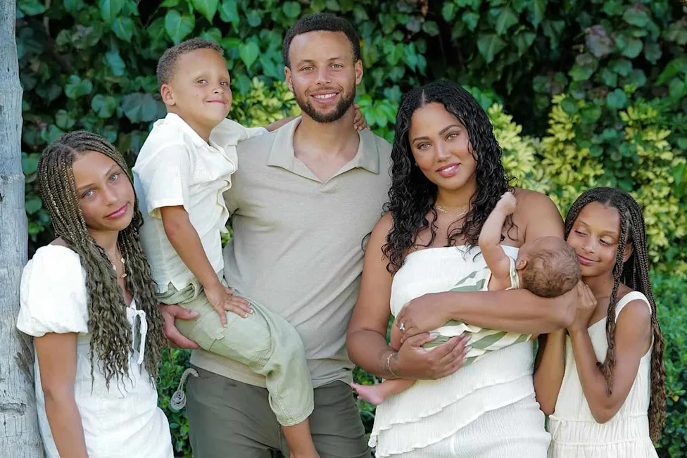

Son
enfance

Stephen Curry est né le 14 mars 1988 à Akron, dans l'Ohio. Il est le fils de Dell Curry, ancien
joueur
de la NBA, et de Sonya Curry.
Dès son plus jeune âge, Stephen a été exposé au basketball grâce à son père, qui lui a transmis sa
passion pour le sport.
Il a grandi à Charlotte, en Caroline du Nord, où il a commencé à jouer au basketball dans les
équipes
locales.
Sa
carrière

Trop frêle pour les grandes universités, Stephen rejoint Davidson College en 2006. Il y devient une
star nationale en menant son équipe jusqu'en quarts de finale du tournoi NCAA 2008.
Choisi en 7e position de la draft 2009 par les Golden State Warriors, il s'impose rapidement, mais
des blessures récurrentes aux chevilles menacent de freiner sa progression.
En 2013, il claque 272 tirs à trois points sur la saison, un record à l'époque, et forme avec Klay
Thompson le duo légendaire des « Splash Brothers ».

Sous la direction de Steve Kerr, les Warriors dominent la ligue. En 2015, Stephen est élu MVP et
offre à Golden State son premier titre depuis 40 ans.
En 2016, il est élu MVP à l'unanimité, une première dans l'histoire de la NBA, avec 402 tirs à trois
points sur la saison et un bilan de 73 victoires pour 9 défaites avec son équipe.
L'arrivée de Kevin Durant en 2016 mène à deux nouveaux titres, en 2017 et 2018.

Après des années plus difficiles marquées par les blessures, Stephen revient au sommet. Le 14
décembre 2021, au Madison Square Garden, il bat le record de Ray Allen et devient le meilleur
marqueur de tirs à trois points de l'histoire.
En 2022, il remporte un quatrième titre face aux Celtics et est sacré MVP des Finales pour la
première fois de sa carrière.
En 2024, il décroche l'or olympique à Paris avec l'équipe des États-Unis.
Son
palmarès
2015 - 2017 - 2018 - 2022
2015 - 2016
2022
2016 - 2021
Paris 2024
de l'histoire de la NBA
Sa
vie privée

Stephen épouse Ayesha Alexander en 2011. Le couple a quatre enfants : Riley, Ryan, Canon et Caius.
Ayesha est aussi une animatrice télé et une femme d'affaires reconnue.
Profondément croyant, Stephen inscrit sur ses chaussures le verset « Je peux tout par celui qui me
fortifie ».
Avec sa femme, il fonde la fondation Eat. Learn. Play., qui lutte contre la faim chez les enfants et
soutient l'éducation et le sport dans sa région. Il s'engage aussi dans la lutte contre le
paludisme.
Passionné de golf, il y joue à haut niveau en amateur. Il a également terminé ses études à Davidson
en 2022.